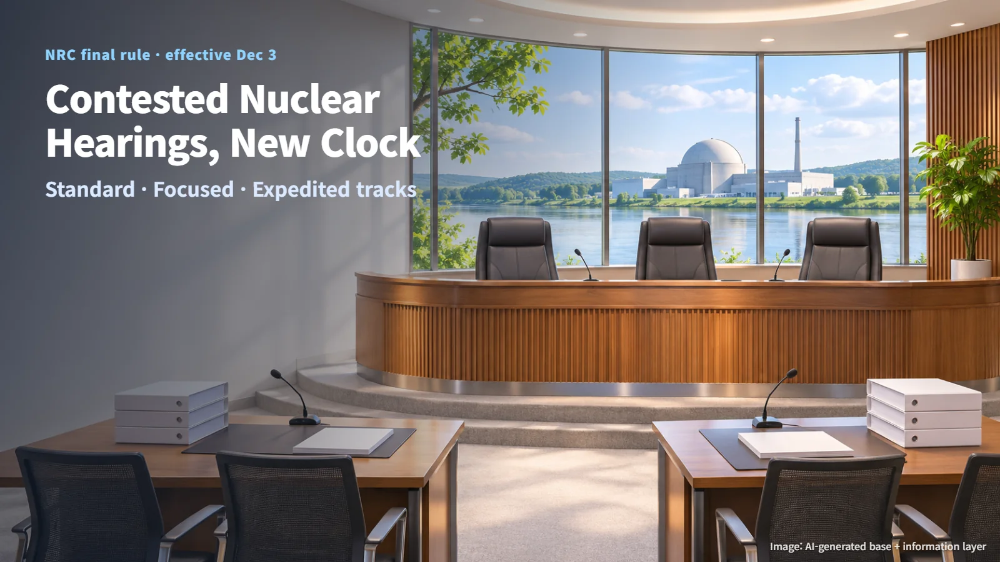
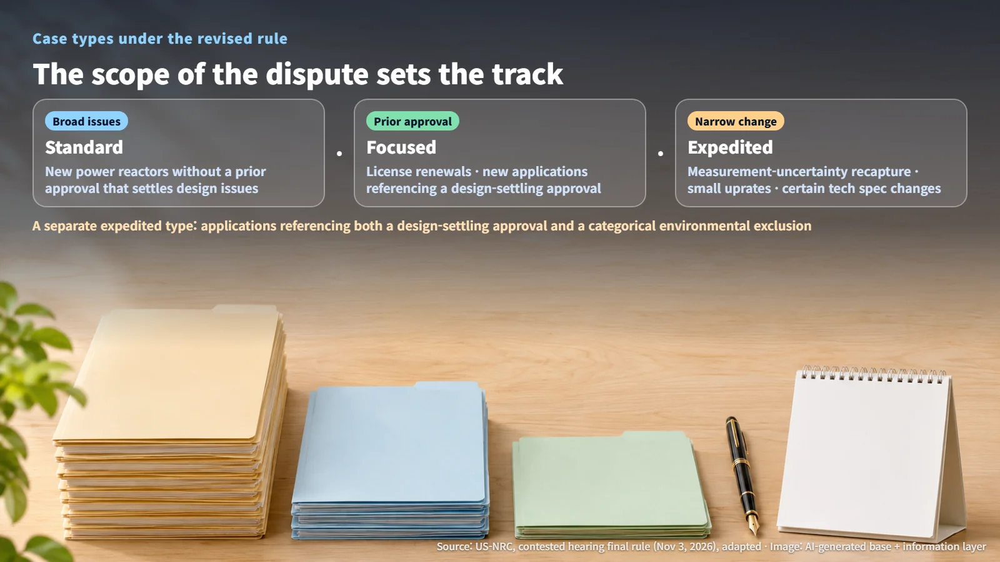
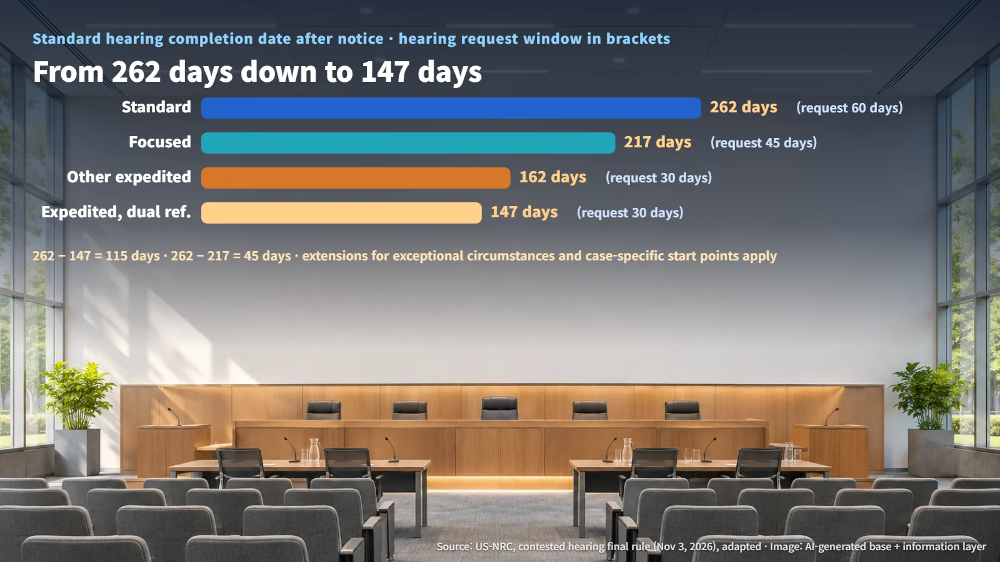

United States · Licensing
When a Nuclear License Is Challenged: The NRC's New Contested Hearing Rule and the Timelines That Start December 3
An NRC final rule published on November 3 sets standard, focused and expedited timelines for contested licensing hearings noticed after December 3.
When someone challenges a license to build a nuclear plant or keep one running, a natural question follows: how long will the dispute last? On November 3, 2026, the US Nuclear Regulatory Commission (NRC) published a final rule in the Federal Register that sets a new timetable for exactly this process. It follows an October NRC rule on using test-reactor data for commercial licensing and continues the agency's broader overhaul of its licensing framework. The rule takes effect on December 3.

What a Contested Hearing Is and What Changes
A contested adjudication is the process that decides specific legal or factual issues raised against a license application. Much like a court case, anyone who wants to take part must show standing (a right to participate based on an interest that could be affected) and submit admissible contentions, which a licensing board then reviews. According to NRC guidance, each contention needs a stated basis supported by facts or expert opinion.
The revision implements the ADVANCE Act and Executive Order 14300. Its aim is to lighten the hearing burden and make the process more predictable. Once contentions are admitted, evidentiary hearings are to begin as early as possible, hearings get completion deadlines, and the hearing schedule is aligned as closely as possible with the NRC's technical review schedule. The NRC says the design allows a typical hearing to finish in 11 to 13.5 months, and in less time under the expedited track.
The trigger is the date a contested hearing proceeding is noticed. The new schedules apply to proceedings noticed after December 3. As of November 4, the rule is published and awaiting its effective date. Actual timelines for individual cases will be set in future notices and in each board's scheduling order. Safety findings and license issuance continue to run through the technical and environmental reviews and Commission decisions as before; this revision organizes the timetable of the dispute that runs alongside them.
Three Tracks: New Reactors, License Renewals and Power Uprates
The new rule sorts cases into three tracks. The dividing line is how widely the issues remain open to dispute.
- Standard: new power reactors and similar applications without a prior approval that resolves design issues
- Focused: power reactor license renewals, new applications that reference an approval resolving design issues, and similar cases
- Expedited: measurement uncertainty recapture and small power uprates, certain technical specification changes, and similar cases. Applications that reference both a design-resolving approval and an environmental categorical exclusion form a separate type within the expedited track
Measurement uncertainty recapture means making the instruments that measure reactor power more precise, then raising output slightly by the amount that had been held back as an error margin. A narrow change leaves narrow issues to contest.
The practical result: even two new reactors can land on different tracks depending on which design approval and environmental review path they reference. Issues already settled by an earlier approval stay settled, and the contest focuses on the remaining site and operating issues. The default hearing format is Subpart L, and uranium enrichment facility proceedings follow the same format.

Comparing the Deadlines: 60, 45, 30 Days and 262, 217, 147 Days
| Track | Hearing request | Answer | Contention admissibility decision | Standard hearing completion date | |---|---|---|---|---| | Standard | 60 days after notice | 25 days | 35 days | 262 days after notice | | Focused | 45 days after notice | 20 days | 35 days | 217 days after notice | | Expedited | 30 days after notice | 15 days | 30 days | 162 days after notice (147 days for the dual-reference type) |
(Source: US-NRC, Streamlining Contested Adjudications in Licensing Proceedings, adapted)
On all three tracks, replies are due 7 days after the answer is served. The standard track carries forward the structure of the existing Subpart G guidance (a hearing request window of at least 60 days, 25 days to answer, 7 days to reply), while the focused and expedited tracks shorten those deadlines.
The numbers make the comparison clear. The expedited filing window is 30 ÷ 60 = 0.5, or half the standard window. For the standard hearing completion date, the gap between the standard track and the dual-reference expedited type is 262 − 147 = 115 days, and the gap between the standard and focused tracks is 262 − 217 = 45 days.

The standard hearing completion date serves as the reference point for how late-filed contentions are handled. From the start of the evidentiary hearing to the initial decision, the rule sets 135 days for a typical standard case, 110 days for focused, 80 days for other expedited cases, and 65 days for the dual-reference type. The 11 to 13.5 months cited earlier is the NRC's design range for completing a hearing, while 262 days is a procedural reference date, so each number carries its own meaning. Extensions for exceptional circumstances and case-specific starting points also apply.
Shorter Deadlines Put Evidence Up Front
Once contentions are admitted, the evidentiary hearing generally begins right away, with the start date set by the board's scheduling order. Disclosure is due 20 days after the admission order when the case moves directly to an evidentiary hearing, and within 30 days otherwise. The NRC also makes available application documents, correspondence and review materials related to the admitted contentions.
Subpart L limits discovery (requests that the other side produce documents or give depositions) to the scope allowed under Subpart C. With less time spent digging for material mid-dispute, the weight shifts toward having design and safety analysis bases and expert explanations ready before the hearing.
New issues raised late have deadlines too. If a contention meets the required conditions, such as resting on information that was previously unavailable and materially different from what was available before, a motion for its admission is due within 30 days after the new information becomes available (20 days for certain proceedings, including the expedited track). Even after the duty to update disclosures ends, relevant new developments must be reported to the board and the parties. Appeal deadlines are set by type: 20 days after service for orders on hearing requests and information access, and 7 days after issuance for orders selecting the hearing procedure, among others.
The heart of this revision is making the length of a dispute something that can be calculated in advance. The first checkpoints will be the initial hearing notices and scheduling orders issued after December 3.